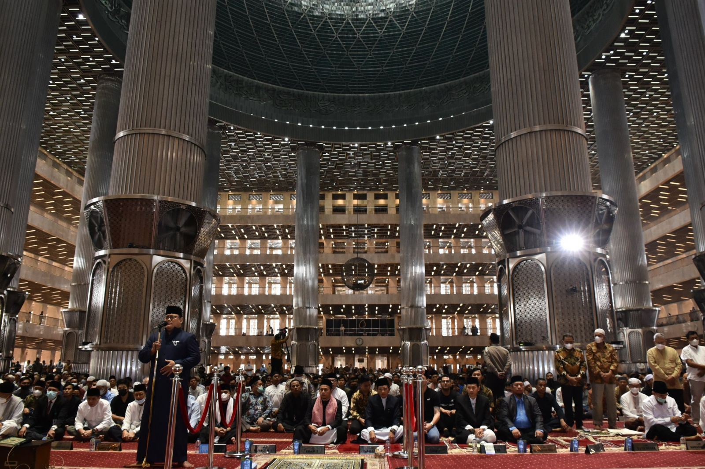

English
English Arabic
ArabicKhutbah Jumat: Suluk Sosial dan Fikih Anti-Korupsi
Artinya : “Takwa adalah takut pada Allah, melakukan perintah yang diturunkan Allah melalui al-Qur’an dan Hadis, memiliki qana’ah (sikap merasa cukup) dengan hal yang sedikit, serta selalu awas dengan kesiapan kita menuju Hari Akhirat."

Oleh : KH. M. Faried F. Saenong, MA, Ph.D
Jamaah Jum’at yang diridhai Allah SWT. Islam menghadirkan bentuk keshalehan sempurna serta paripurna bagi manusia beragama berupa kesalehan vertical dengan menjalankan ibadah atau ritual kepada Allah, dan kesalehan horizontal dengan membangun hubungan sosial yang solid dengan sesama manusia, sesama makhluk hidup dan dengan alam semesta.
Keshalehan sosial ini tidak hanya tersimpulkan dari logika ketuhanan dan kemanusiaan, tetapi juga ditegaskan secera eksplisit dalam banyak Riwayat dan konsepsi ke-Islam-an lainnya. Kesalehan sosial misalnya disebut-sebut sebagai salah satu bagian atau rukun terpenting dalam beragama, khususnya ketika dihubungkan dengan konsep trilogi Islam berupa Aqidah, Syari’ah dan Akhlak. Di bagian akhlak inilah, kesalehan sosial direproduksi sebagai produk keberagamaan. Produk yang baik pasti berasal dari proses yang baik pula.
Di banyak kesempatan lainnya, Nabi Muhammad shallallahu ‘alaihi wasallam menyatakan bahwa beberapa model keshalehan dan suluk sosial merupakan konsekuensi dari keimanan atas Allah SWT dan Hari Akhirat. Rasulullah sering menyebutkan beberapa dimensi kesalehan setelah menyebutkan: man kana yu’minu biAllah wa al-yaum al-akhir. Di satu kali, Nabi menegaskan bahwa memuliakan tetangga merupakan konsekuensi kaimanan.
وَمَنْ كَانَ يُؤْمِنُ بِاللهِ وَاليَوْمِ الآخِرِ فَلْيُكْرِمْ جَارَهُ، وَمَنْ كَانَ يُؤْمِنُ بِاللهِ وَاليَوْمِ الآخِرِ فَلْيُكْرِمْ ضَيْفَهُ.
"...Siapa saja yang beriman kepada Allah dan hari akhir, hendaklah ia memuliakan tetangganya.Siapa saja yang beriman kepada Allah dan hari akhir, hendaklah ia memuliakan tamunya." (HR. Bukhari dan Muslim)
Jamaah Jum’at yang diridhai Allah SWT. Di konteks yang berbeda, Nabi seringkali menghubungkan orang terbaik dengan praktek kesalehan dan suluk sosial dengan menyebutkan khairukum atau khiyarukum, yang berarti orang terbaik di antara kalian. Di satu kali, Nabi menyebutkan, bahwa membayar utang secepatnya merupakan representasi orang terbaik. Kata Nabi:
(حصيح البخاري 2305) خريمك أحس نمك قضاء
Di kali lain, Nabi menegaskan bahwa orang terbaik di antara kamu adalah mereka yang selalu memberi makan pada orang lain. Di sini, Nabi berkata menyatakan:
خريمك من أطعم الطعام ورَّد السالم )حصيح اجلامع 3318)
Di kesempatan lain, Nabi tegaskan bahwa orang yang terbaik adalah:
• Mereka yang paling baik akhlaknya;
خيارمك أحاس نمك أخالقا (حصيح البخاري)
• mereka yang paling baik bagi keluarganya;
خريمك خريمك ألهه (حصيح ابن حبان / 4177)
• Mereka yang paling baik pada sahabatnya;
خري ا ألحصاب عند هللا خريمك لصاحبه (حصيح ا ألدب املفرد/84)
• Mereka yang paling baik pada tetangganya;
وخري اجلريان عند هللا خريمك جلاره (حصيح ا ألدب املفرد/84)
• Mereka yang diharapkan kebaikannya;
خَيْرُكُمْ مَنْ يُرْجَى خَيْرُهُ وَيُؤْمَنُ شَرُّهُ (حصيح الرتمذي / 2263)
• Mereka yang panjang umur lagi penuh dengan kebaikan;
خري الناس من طال معره وحسن معه (حصيح اجلامع 3297)
• Mereka yang meiliki hati yang mulia dan lisan yang jujur;
• dan puncaknya, yang terbaik adalah mereka yang paling banyak manfaatnya bagi manusia.
خير الناس أنفعهم للناس

Jamaah Jum’at yang diridhai Allah SWT.
Kesemua suluk dan kesalehan sosial ini merupakan bukti kuat bahwa Islam tidak hanya menekankan kesalehan vertikal dan individual, tetapi di saat yang sama juga mementingkan berbagai bentuk kesalehan sosial. Dari sini, kita dapat memahami dengan mudah konsepsi Maqashid sl-Syari‘ah yang disusun oleh para ulama.
Semua ini berhilir pada misalnya Maqashid al-Syari‘ah model al-Syathibi berupa penjagaan total atas agama, jiwa, keturunan atau martabat, harta dan akal. Ini juga sesuai dengan konsep Maqashid al-Syari‘ah ala berupa keadilan, kebebasan dan dari sini, sejatinya, kesalehan sosial serta Maqashid al-Syari‘ah ini membuat umat Islam sadar dengan sesadar-sadarnya bahwa segala perbuatan yang merugikan orang lain, merupakan perbuatan dosa yang dikecam keras oleh agama.
Jamaah Jum’at yang diridhai Allah SWT. Secara sederhana, tindak korupsi dipahami sebagai tindakan yang tidak hanya merugikan keuangan negara. Tetapi juga melanggar dan merampas hak-hak sosial dan ekonomi masyarakat umumnya (UU No. 20/2001).
Tidak hanya itu, tindak korupsi hanya akan menghancurkan tatanan hidup bermasyarakat yang luhur. Ia kerap terjadi di berbagai lapisan kehidupan masyarakat seperti lingkup keluarga, masyarakat, teman bermain, lingkungan bekerja, sekolah, kantor, dan yang lebih spesifik lagi, di lingkungan pengelola keuangan umat dan negara.
Terlepas dari bentuk korupsi yang sistemik (yang dilakukan dalam proses-proses resmi di birokrasi dan pemerintahan), atau yang non-sistemik (yang dilakukan di luar jalur negara), semua bentuk kecurangan yang terkait korupsi sangat merugikan banyak pihak. Karena efeknya yang massif dan meluas, maka pantas jika tindak korupsi disepakati sebagai extraordinary crime atau kejahatan luar biasa, sekaligus wabah yang mesti dimusuhi bersama. Ini sejalan dengan ide dasar yang dikokohkan dalam the United Nation Convention Against Corruption yang diproklamirkan di Meksiko (2005).
Jamaah Jum’at yang diridhai Allah SWT. Jauh sebelum hadirnya UU No. 20/2001 dan United Nation Convention Against Corruption yang diproklamirkan di Meksiko (2005), Islam telah menghadirkan prinsip-prinsip kunci yang sejatinya, dapat menghindarkan manusia dari tindak dan prilaku korupsi. Kita dapat saja berkata, bahwa Islam memiliki model-model Fikih Anti-korupsi yang nilai-nilai luhurnya dapat diaplikasikan di berbagai dimensi kehidupan umat manusia.
Fikih memperkenalkan istilah-istilah yang menunjukkan beberapa bentuk patologi sosial yang dapat membawa seseorang pada tindak dan prilaku koruptif. Meskipun merujuk pada konteks kecurangan dalam dimensi yang berbeda, istilah-istilah ini dapat dihubungkan dengan baik untuk melawan berbagai bentuk kejahatan luar biasa ini. Larangan gharar dalam praktik-praktik muamalah ekonomi misalnya, mengandaikan kebencian Islam pada berbagai bentuk kecurangan dan penipuan yang mengakibatkan kerugian di pihak lain.
Dalam hal ini, Rasulullah shallallahu ‘alaihi wasallam, juga seringkali memperingatkan manusia tentang laku ghulul dalam sejarah umat Islam. Istilah ghulul ini awalnya mengacu pada kecurangan dan penggelapan harta rampasan perang sebelum dibagi berdasarkan aturan yang ditetapkan Nabi. Namun demikian, larangan ghulul ini dapat dibawa ke dalam makna larangan melakukan kecurangan atas properti atau harta yang bersifat publik. Dalam beberapa kesempatan, Rasulullah shallallahu ‘alaihi wasallam melarang siapapun yang menjabat mengambil atau menerima apapun di luar gaji yang ditetapkan untuknya.
Dalam sebuah Hadis Riwayat Abu Dawud, Rasulullah menegaskan: “Siapa saja yang telah aku angkat sebagai pejabat yang kemudian aku berikan gaji, maka sesuatu yang diterima di luar gajinya adalah ghulul.” Dalam konteks ini, istilah ghulul dapat mencakup segala bentuk gratifikasi yang terkait dengan posisi atau jabatan publiknya. Suatu ketika, Ibn al-Lubtiyah, seorang amil zakat di masa Nabi, dikecam oleh Nabi akibat menerima gratifikasi dari Bani Sulaim. Dalam sebuah hadis riwayat Ahmad dan Abu Dawud, Nabi bahkan menegaskan bahwa hadiah yang diterima para pejabat adalah ghulul atau penggelapan. Beliau tegaskan:
Artinya : “Siapa saja yang kami gunakan untuk suatu amal atau jabatan, dan telah kami berikan gaji untuknya, maka apa saja yang dia ambil selain itu adalah ghulul” (HR. Ahmad dan Abu Dawud).
Masih dalam konteks ini, ghulul memenuhi semua kriteria tindak korupsi yang antara lain terwujud karena hadirnya niat jahat untuk memperkaya diri sendiri. Ghulul juga dilakukan tarkait dengan jabatan sehingga seseorang menyalahgunakan wewenangnya. Karena penggelapan kekayaan itu, banyak pihak mengalami kerugian termasuk masyarakat umum dan negara. Ini jelas penggelapan dan kecurangan atas hak orang lain dan hak negara.
Jamaah Jum’at yang diridhai Allah SWT. Istilah lain yang juga sering dihubungkan dengan praktik korupsi adalah risywah atau suap. Risywah dipahami sebagai tindakan pemberian sesuatu atau komitmen pendahuluan untuk mendapatkan sesuatu dengan melanggar hak pihak atau orang lain. Ini sering terjadi dalam transaksi-transaksi bernilai besar. Ketamakan atas harta dan kepemilikan kemudian menggoda dan memaksa manusia untuk memberikan sesuatu kepada pejabat tertentu untuk mendapatkan sebuah proyek sambil melanggar hak orang lain yang lebih berhak atas pekerjaan tersebut.
Rasulullah shallallahu ‘alaihi wasallam sangat tegas mengecam semua pihak yang terlibat dalam tindakan risywah seperti ini. Sebuah Hadis Riwayat Ahmad menegaskan:
Artinya: “Rasulullah melaknat penyuap, penerima suap dan perantara, yaitu orang yang menghubungkan keduanya” (HR. Ahmad).
Selain larangan atas segala tindakan yang gharar (penipuan), ghulul (penggelapan), dan risywah (suap), Rasulullah shallallahu ‘alaihi wasallam juga sering mengingatkan kita tentang larangan mendekati, mengambil atau mengkonsumsi segala hal yang syubhat. Membuat demarkasi yang jelas antara yang halal, syubhat dan haram, sejatinya membuat kita hanya melakukan, mengambil, atau mengkonsumsi yang jelas kehalalannya. Rasulullah shallallahu ‘alaihi wasallam menegaskan:
إِنَّ الْحَلاَلَ بَيِّنٌ وَإِنَّ الْحَرَامَ بَيِّنٌ وَبَيْنَهُمَا أُمُوْرٌ مُشْتَبِهَاتٌ لاَ يَعْلَمُهُنَّ كَثِيْرٌ مِنَ النَّاسِ، فَمَنِ اتَّقَى الشُّبُهَاتِ فَقَدْ اسْتَبْرَأَ لِدِيْنِهِ وَعِرْضِهِ، وَمَنْ وَقَعَ فِي الشُّبُهَاتِ وَقَعَ فِي الْحَرَامِ
Artinya: “Sesungguhnya yang halal itu jelas, dan sesungguhnya yang haram itu jelas. Di antara keduanya, ada hal-hal syubhat (meragukan) yang tidak diketahui oleh kebanyakan manusia. Siapa saja yang takut dengan menghindarkan diri dari hal syubhat itu, maka ia telah memuliakan agama dan kehormatannya. Siapa saja yang terjerumus dalam syubhat, maka ia sangat potensial jatuh pada perkara haram.”
Jamaah Jum’at yang diridhai Allah SWT. Sebagai umat yang beriman, kita semua dituntut hanya untuk mengambil, menggunakan dan mengkonsumsi yang halal saja. Sebagai umat Islam, kita dilarang keras untuk mengkonsumsi apa saja secara batil Allah subhanahu wata'ala mengingatkan dalam QS. Al-Nisa’ [4] ayat 29 yang artinya :
“Hai orang-orang yang beriman! Janganlah kamu memakan harta sesamamu dengan cara yang batil, kecuali dalam bentuk transaksi atas dasar ridha di antara kamu. Dan janganlah kamu membunuh dirimu. Sesungguhnya Allah Maha Penyayang kepadamu”.
Untuk menghindari prilaku korupsi, Rasulullah shallallahu ‘alaihi wasallam telah mengajarkan sejak awal agar kita menghindari sifat-sifat tercela yang mudah membawa kita pada kebanyakan dosa lainnya. Sifat-sifat tercela ini bahkan disebut sebagai biang kesalahan dan dosa. Rasulullah shallallahu ‘alaihi wasallam mengingatkan:
إن إهمات إخلطااي ثالث: إلكرب وإحلسد وإحلرص
Artinya: “Bahwa biang atau induk dari semua kesalahan adalah sombong, dengki dan tamak.”
Di lanjutan hadis ini, Rasulullah shallallahu ‘alaihi wasallam menegaskan bahwa cinta harta yang berlebihan, cinta pujian, serta cinta jabatan, akan membawa kita pada kubangan dosa-dosa lainnya termasuk tindak korupsi. Di saat yang sama, Rasulullah shallallahu ‘alaihi wasallam selalu menekankan agar manusia selalu berlaku jujur dan menjauhi kebohongan.
“Hendaklah kamu jujur, karena kejujuran akan membawa pada kebaikan, dan kebaikan membawa ke sorga. Seseorang yang selalu jujur dan mencari kejujuran akan ditetapkan oleh Allah sebagai orang yang jujur. Sebaliknya, jauhilah sifat bohong, karena kebohongan akan membawamu pada kejahatan, dan kejahatan akan membawa ke neraka. Orang yang selalu bohong dan mencari-cari kebohongan, ditetapkan oleh Allah sebagai pembohong” (HR. Muslim).
Karenanya, mari kita tingkatkan kualitas takwa kita yang akan menghindarkan kita dari berbagai bentuk dosa lainnya. Sayyidina ‘Ali bin Abi Talib pernah mengekspresikan ketakwaan dalam wejangannya:
التقوي هو اخلوف من اجلليل والعمل ابلتزنيل والقناعة ابلقليل والاس تعداد ليوم الرحيل
Artinya : “Takwa adalah takut pada Allah, melakukan perintah yang diturunkan Allah melalui al-Qur’an dan Hadis, memiliki qana’ah (sikap merasa cukup) dengan hal yang sedikit, serta selalu awas dengan kesiapan kita menuju Hari Akhirat." (FAJR/Humas dan Media Masjid Istiqlal)